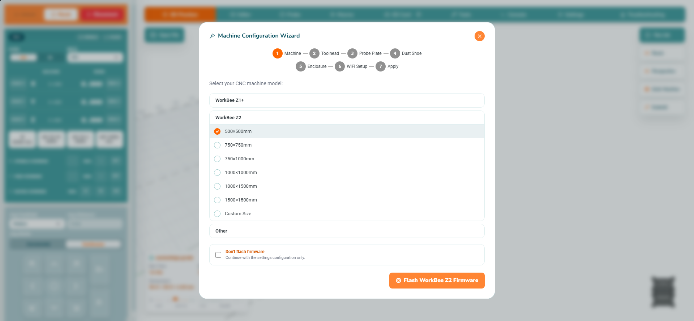
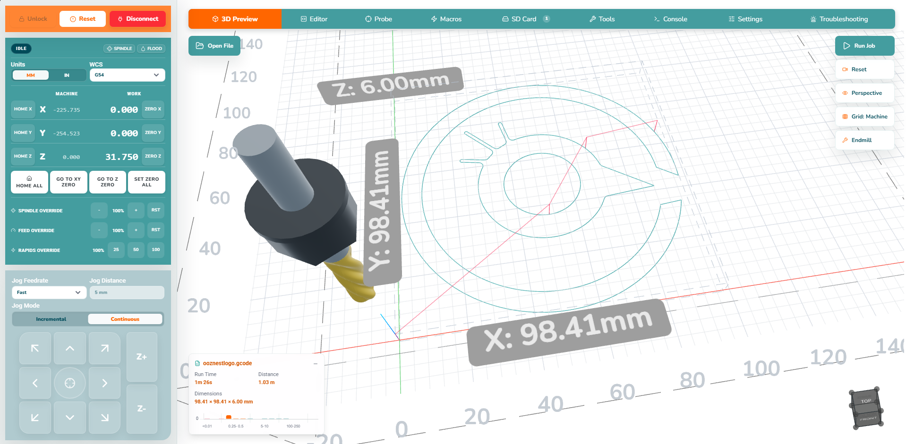
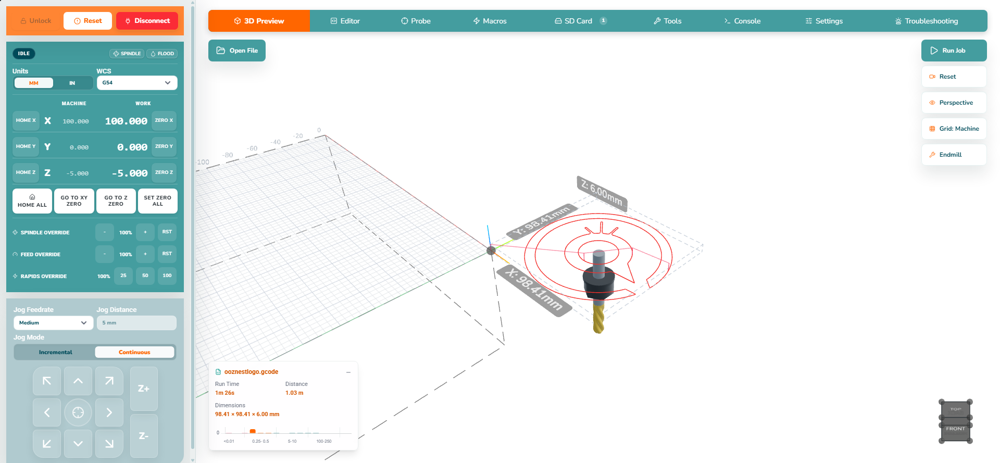
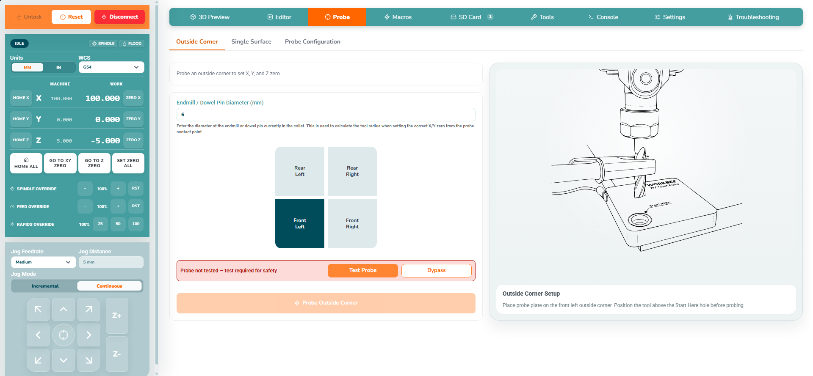
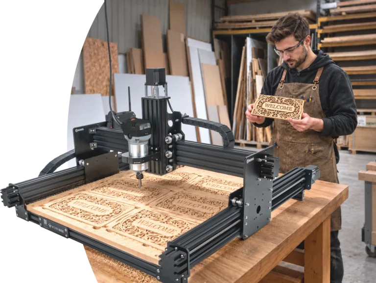

START WITH YOUR MACHINE
A helping hand with setup
Work through machine configuration with the setup wizard, then find your settings together when you need to make an adjustment.

MEET OOZNEST CONTROL
Our CNC software of choice for WorkBee Z2 and Motion Control Core.
Set up your machine, position your tool and bring your G-code to life. A clear, familiar workspace that keeps you in control, from the first connection to the final pass.
Windows · macOS · Linux

Everything you need at the machine, together in one place. Move naturally from setting up your WorkBee to running the G-code you’ve prepared in your CAM software.

START WITH YOUR MACHINE
Work through machine configuration with the setup wizard, then find your settings together when you need to make an adjustment.

GET INTO POSITION
Jog your axes, choose the step size and keep an eye on your position. Put the tool where you need it before you begin.

FIND YOUR STARTING POINT
Use the guided probing tools with a compatible touch probe to establish your workpiece zero. Check the probe connection before each routine.
FROM TOOLPATH TO FINISHED PART
Load your G-code and explore the 3D toolpath before you run it. With your machine prepared, start the job and follow its progress from the same workspace.
Ooznest Control runs your machine. Create your design and generate suitable G-code in your CAD/CAM software first. Previewing does not replace checking your setup, clearances and workholding.
Designed around the way you use your WorkBee Z2 and Motion Control Core. A connected workflow, from your computer to your CNC machine.

WorkBee CNC machine pictured. Machine specification varies.
CHECK YOUR CONTROLLER
WorkBee Z2 with Motion Control Core
Our recommended pairing for Ooznest Control, running the appropriate Ooznest grblHAL firmware.
Motion Control Core
Use the desktop app for USB or a supported network connection. Follow the controller guide for firmware and connection setup.
Have an older WorkBee?
Compatibility depends on the controller and firmware, not just the machine name. For Duet / RepRapFirmware controllers, we also offer a separate Ooznest Control for Duet fork. It’s a best-effort option without official support. Check its compatibility notes before using it with your machine.
YOUR NEXT PROJECT STARTS HERE
Choose the desktop app for your workshop computer.
Checking the latest release…
A familiar home on your workshop PC.
Choose the version for your Mac’s chip.
A portable app for your Linux workspace.
Open Ooznest Control online and get straight to your workspace — no download or installation needed. Use Chrome or Edge on a desktop computer to connect over USB, then choose your controller’s serial port when prompted.
Download the APK and allow installation from your browser when prompted.
For compatible grblHAL controllers. Extract the ZIP and copy index.html.gz to the controller’s SD card.
Requires sideloading and signing. Use a supported Wi-Fi connection; USB serial is not supported.
New to Ooznest Control? Our documentation takes you from your first connection to preparing and running a job.
Install the app, connect your compatible controller and follow the setup guide for your machine.
Secure the material and tool, home the machine and set your workpiece zero with jogging or a compatible probe.
Open G-code from your CAM software, inspect the preview and check your setup before starting the job.
Connection instructions, everyday workflows and a helping hand when you need it.